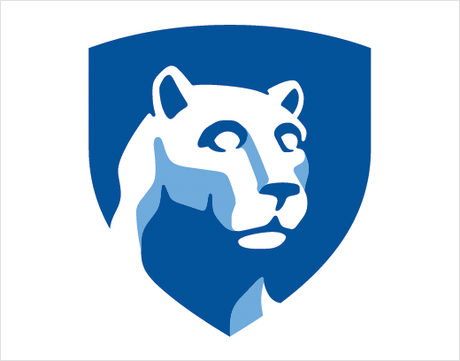

Hello, my name is Mayank Makwana.
I am a software developer, entrepreneur, and student.
I'm passionate about developing disruptive software capable of creating mass change. I have experience in building desktop, mobile, and web applications, including both front-end and back-end work.

I attend the Pennsylvania State University where I am pursuing a degree in Computer Science with a minor in Entrepreneurship & Innovation. I intend to graduate in May 2018.